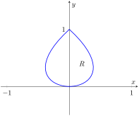

Section15.4Flow, Flux, Green's Theorem and the Divergence Theorem
Subsection15.4.1Flow and Flux
Line integrals over vector fields have the natural interpretation of computing work when \(\vec F\) represents a force field. It is also common to use vector fields to represent velocities. In these cases, the line integral \(\int_C \vec F\cdot d\vec r\) is said to represent flow.
Figure15.4.1.Illustrating the principles of flow and flux
Let the vector field \(\vec F = \la 1,0\ra\) represent the velocity of water as it moves across a smooth surface, depicted in Figure 15.4.1. A line integral over \(C\) will compute “how much water is moving along the path \(C\text{.}\)”
In the figure, “all” of the water above \(C_1\) is moving along that curve, whereas “none” of the water above \(C_2\) is moving along that curve (the curve and the flow of water are at right angles to each other). Because \(C_3\) has nonzero horizontal and vertical components, “some” of the water above that curve is moving along the curve.
When \(C\) is a closed curve, we call flow circulation, represented by \(\oint_C \vec F\cdot d\vec r\text{.}\)
The “opposite” of flow is flux, a measure of “how much water is moving across the path \(C\text{.}\)” If a curve represents a filter in flowing water, flux measures how much water will pass through the filter. Considering again Figure 15.4.1, we see that a screen along \(C_1\) will not filter any water as no water passes across that curve. Because of the nature of this field, \(C_2\) and \(C_3\) each filter the same amount of water per second.
The terms “flow” and “flux” are used apart from velocity fields, too. Flow is measured by \(\int_C \vec F\cdot d\vec r\text{,}\) which is the same as \(\int_C \vec F\cdot\vec T\, ds\) by Definition 15.3.2. That is, flow is a summation of the amount of \(\vec F\) that is tangent to the curve \(C\text{.}\)
By contrast, flux is a summation of the amount of \(\vec F\) that is orthogonal to the direction of travel. To capture this orthogonal amount of \(\vec F\text{,}\) we use \(\int_C \vec F \cdot \vec n\, ds\) to measure flux, where \(\vec n\) is a unit vector orthogonal to the curve \(C\text{.}\) (Later, we'll measure flux across surfaces, too. For example, in physics it is useful to measure the amount of a magnetic field that passes through a surface.)
Figure15.4.2.Further terminology for curves: closed, simple, positively oriented
How is \(\vec n\) determined? We'll later see that if \(C\) is a closed curve, we'll want \(\vec n\) to point to the outside of the curve (measuring how much is “going out”). We'll also adopt the convention that closed curves should be traversed counterclockwise.
(If \(C\) is a complicated closed curve, it can be difficult to determine what “counterclockwise” means. Consider Figure 15.4.3. Seeing the curve as a whole, we know which way “counterclockwise” is. If we zoom in on point \(A\text{,}\) one might incorrectly choose to traverse the path in the wrong direction. So we offer this definition: a closed curve is being traversed counterclockwise if the outside is to the right of the path and the inside is to the left.)
Figure15.4.3.Determining “counterclockwise” is not always simple without a good definition
When a curve \(C\) is traversed counterclockwise by \(\vrt = \la f(t),
g(t)\ra\text{,}\) we rotate \(\vec T\) clockwise 90\(^\circ\) to obtain \(\vec n\text{:}\)
\begin{equation*}
\vec T = \frac{\la \fp(t),g'(t)\ra}{\norm{\vrp(t)}} \Rightarrow \vec n = \frac{\la g'(t),-\fp(t)\ra}{\norm{\vrp(t)}}\text{.}
\end{equation*}
Letting \(\vec F = \la M, N\ra\text{,}\) we calculate flux as:
As the \(x\) and \(y\) components of \(\vrt\) are \(f(t)\) and \(g(t)\) respectively, the differentials of \(x\) and \(y\) are \(dx = \fp(t)dt\) and \(dy=g'(t)dt\text{.}\) We can then write the above integrals as:
This is often written as one integral (not incorrectly, though somewhat confusingly, as this one integral has two “\(d\) 's”):
\begin{align*}
\amp =\int_CM\, dy -N\, dx\text{.}
\end{align*}
We summarize the above in the following definition.
Definition15.4.4.Flow, Flux.
Let \(\vec F=\la M,N\ra\) be a vector field with continuous components defined on a smooth curve \(C\text{,}\) parametrized by \(\vrt =\la f(t),g(t)\ra\text{,}\) let \(\vec T\) be the unit tangent vector of \(\vrt\text{,}\) and let \(\vec n\) be the clockwise 90\(^\circ\)degree rotation of \(\vec T\text{.}\)
This definition of flow also holds for curves in space, though it does not make sense to measure “flux across a curve” in space.
Measuring flow is essentially the same as finding work performed by a force as done in the previous examples. Therefore we practice finding only flux in the following example.
Example15.4.5.Finding flux across curves in the plane.
Curves \(C_1\) and \(C_2\) each start at \((1,0)\) and end at \((0,1)\text{,}\) where \(C_1\) follows the line \(y=1-x\) and \(C_2\) follows the unit circle, as shown in Figure 15.4.6. Find the flux across both curves for the vector fields \(\vec F_1 = \la y, -x+1\ra\) and \(\vec F_2 = \la -x, 2y-x\ra\text{.}\)
Figure15.4.6.Illustrating the curves and vector fields in Example 15.4.5. In (a) the vector field is \(\vec F_1\text{,}\) and in (b) the vector field is \(\vec F_2\text{.}\)
We begin by finding parametrizations of \(C_1\) and \(C_2\text{.}\) As done in Example 15.3.12, parametrize \(C_1\) by creating the line that starts at \((1,0)\) and moves in the \(\la -1,1\ra\) direction: \(\vec r_1(t) = \la 1,0\ra + t\la -1,1\ra = \la 1-t, t\ra\text{,}\) for \(0\leq t\leq 1\text{.}\) We parametrize \(C_2\) with the familiar \(\vec r_2(t) = \la \cos t,\sin t\ra\) on \(0\leq t\leq \pi/2\text{.}\) For reference later, we give each function and its derivative below:
When \(\vec F = \vec F_1 = \la y, -x+1\ra\) (as shown in Figure 15.4.6.(a)), over \(C_1\) we have \(M = y =t\) and \(N = -x+1 = -(1-t)+1 = t\text{.}\) Using Definition 15.4.4, we compute the flux:
Notice how the flux was the same across both curves. This won't hold true when we change the vector field.
When \(\vec F = \vec F_2 = \la -x,2y-x\ra\) (as shown in Figure 15.4.6.(b)), over \(C_1\) we have \(M = -x = t-1\) and \(N = 2y-x = 2t-(1-t) = 3t-1\text{.}\) Computing the flux across \(C_1\text{:}\)
In Example 15.4.5, we saw that the flux across the two curves was the same when the vector field was \(\vec F_1 = \la y, -x+1\ra\text{.}\) This is not a coincidence. We show why they are equal in Example 15.4.23. In short, the reason is this: the divergence of \(\vec F_1\) is 0, and when \(\divv \vec F = 0\text{,}\) the flux across any two paths with common beginning and ending points will be the same.
We also saw in the example that the flux across \(C_1\) was 0 when the field was \(\vec F_2 = \la -x, 2y-x\ra\text{.}\) Flux measures “how much” of the field crosses the path from left to right (following the conventions established before). Positive flux means most of the field is crossing from left to right; negative flux means most of the field is crossing from right to left; zero flux means the same amount crosses from each side. When we consider Figure 15.4.6.(b), it seems plausible that the same amount of \(\vec F_2\) was crossing \(C_1\) from left to right as from right to left.
Subsection15.4.2Green's Theorem
There is an important connection between the circulation around a closed region \(R\) and the curl of the vector field inside of \(R\text{,}\) as well as a connection between the flux across the boundary of \(R\) and the divergence of the field inside \(R\text{.}\) These connections are described by Green's Theorem and the Divergence Theorem, respectively. We'll explore each in turn.
Figure15.4.7.Introducing Green's Theorem
Green's Theorem states “the counterclockwise circulation around a closed region \(R\) is equal to the sum of the curls over \(R\text{.}\)”
Theorem15.4.8.Green's Theorem.
Let \(R\) be a closed, bounded region of the plane whose boundary \(C\) is composed of finitely many smooth curves, let \(\vec r(t)\) be a counterclockwise parametrization of \(C\text{,}\) and let \(\vec F =\la M,N\ra\) where \(N_x\) and \(M_y\) are continuous over \(R\text{.}\) Then
Let \(\vec F =\la -y,x^2+1\ra\) and let \(R\) be the region of the plane bounded by the triangle with vertices \((-1,0)\text{,}\)\((1,0)\) and \((0,2)\text{,}\) shown in Figure 15.4.10. Verify Green's Theorem; that is, find the circulation of \(\vec F\) around the boundary of \(R\) and show that is equal to the double integral of \(\curl \vec F\) over \(R\text{.}\)
The curve \(C\) that bounds \(R\) is composed of 3 lines. While we need to traverse the boundary of \(R\) in a counterclockwise fashion, we may start anywhere we choose. We arbitrarily choose to start at \((-1,0)\text{,}\) move to \((1,0)\text{,}\) etc., with each line parametrized by \(\vec r_1(t)\text{,}\)\(\vec r_2(t)\) and \(\vec r_3(t)\text{,}\) respectively.
We leave it to the reader to confirm that the following parametrizations of the three lines are accurate:
\(\vec r_1(t) = \la 2t-1,0\ra\text{,}\)
for \(0\leq t\leq 1\text{,}\)
with \(\vrp_1(t) = \la 2,0\ra\text{,}\)
\(\vec r_2(t) = \la 1-t,2t\ra\text{,}\)
for \(0\leq t\leq 1\text{,}\)
with \(\vrp_2(t) = \la -1,2\ra\text{,}\) and
\(\vec r_3(t) = \la -t,2-2t\ra\text{,}\)
for \(0\leq t\leq 1\text{,}\)
with \(\vrp_3(t) = \la -1,-2\ra\text{.}\)
The circulation around \(C\) is found by summing the flow along each of the sides of the triangle. We again leave it to the reader to confirm the following computations:
The circulation is the sum of the flows: \(2\text{.}\)
We confirm Green's Theorem by computing \(\iint_R \curl \vec F\, dA\text{.}\) We find \(\curl \vec F = 2x+1\text{.}\) The region \(R\) is bounded by the lines \(y = 2x+2\text{,}\)\(y=-2x+2\) and \(y=0\text{.}\) Integrating with the order \(dx\, dy\) is most straightforward, leading to
\begin{equation*}
\int_0^2\int_{y/2-1}^{1-y/2} (2x+1)\, dx\, dy = \int_0^2 (2-y)\, dy = 2\text{,}
\end{equation*}
which matches our previous measurement of circulation.
Figure15.4.11.Verifying Green's Theorem with an example
Example15.4.12.Using Green's Theorem.
Let \(\vec F = \la \sin x,\cos y\ra\) and let \(R\) be the region enclosed by the curve \(C\) parametrized by \(\vec r(t) = \la 2\cos t+ \frac1{10}\cos(10t),2\sin t+\frac1{10}\sin(10t)\ra\) on \(0\leq t\leq 2\pi\text{,}\) as shown in Figure 15.4.13. Find the circulation around \(C\text{.}\)
Computing the circulation directly using the line integral looks difficult, as the integrand will include terms like “\(\sin\big(2\cos t + \frac1{10}\cos(10t)\big)\text{.}\)”
Green's Theorem states that \(\oint_C\vec F\cdot d\vec r = \iint_R \curl\vec F\, dA\text{;}\) since \(\curl \vec F = 0\) in this example, the double integral is simply 0 and hence the circulation is 0.
Since \(\curl \vec F = 0\text{,}\) we can conclude that the circulation is 0 in two ways. One method is to employ Green's Theorem as done above. The second way is to recognize that \(\vec F\) is a conservative field, hence there is a function \(f(x,y)\) wherein \(\vec F = \nabla f\text{.}\) Let \(A\) be any point on the curve \(C\text{;}\) since \(C\) is closed, we can say that \(C\) “begins” and “ends” at \(A\text{.}\) By the Fundamental Theorem of Line Integrals, \(\oint_C \vec F\, d\vec r = f(A)-f(A) = 0\text{.}\)
Since Green's Theorem is an important result, it's worth taking a minute (or 12) to see why it's true, in the video in Figure 15.4.14.
Figure15.4.14.Sketching the proof of Green's Theorem
One can use Green's Theorem to find the area of an enclosed region by integrating along its boundary. Let \(C\) be a closed curve, enclosing the region \(R\text{,}\) parametrized by \(\vec r(t) = \la f(t),g(t)\ra\text{.}\) We know the area of \(R\) is computed by the double integral \(\iint_R \, dA\text{,}\) where the integrand is \(1\text{.}\) By creating a field \(\vec F\) where \(\curl \vec F =1\text{,}\) we can employ Green's Theorem to compute the area of \(R\) as \(\oint_C \vec F\cdot d\vec r\text{.}\)
One is free to choose any field \(\vec F\) to use as long as \(\curl\vec F = 1\text{.}\) Common choices are \(\vec F = \la 0,x\ra\text{,}\)\(\vec F = \la -y,0\ra\) and \(\vec F = \la -y/2,x/2\ra\text{.}\) We demonstrate this below.
Example15.4.15.Using Green's Theorem to find area.
Let \(C\) be the closed curve parametrized by \(\vrt = \la t-t^3,t^2\ra\) on \(-1\leq t\leq 1\text{,}\) enclosing the region \(R\text{,}\) as shown in Figure 15.4.16. Find the area of \(R\text{.}\)

Figure15.4.16.The region \(R\text{,}\) whose area is found in Example 15.4.15
We can choose any field \(\vec F\text{,}\) as long as \(\curl \vec F = 1\text{.}\) We choose \(\vec F = \la -y,0\ra\text{.}\) We also confirm (left to the reader) that \(\vrt\) traverses the region \(R\) in a counterclockwise fashion. Thus
Figure15.4.17.Using Green's Theorem to find the area under a cycloidFigure15.4.18.Using Green's Theorem to derive a polygon area formula
Another interesting scenario that comes up is the case of multiply-connected regions (as opposed to simply-connected). If a bounded region has a “hole”, its boundary will consist of more than one curve: the outer boundary, as well as the boundary of the hole. Green's Theorem applies in this situation as well, as the video in Figure 15.4.19 explains.
Figure15.4.19.Green's Theorem and multiply-connected regions
Subsection15.4.3The Divergence Theorem
Green's Theorem makes a connection between the circulation around a closed region \(R\) and the sum of the curls over \(R\text{.}\) The Divergence Theorem makes a somewhat “opposite” connection: the total flux across the boundary of \(R\) is equal to the sum of the divergences over \(R\text{.}\)
Theorem15.4.20.The Divergence Theorem (in the plane).
Let \(R\) be a closed, bounded region of the plane whose boundary \(C\) is composed of finitely many smooth curves, let \(\vec r(t)\) be a counterclockwise parametrization of \(C\text{,}\) and let \(\vec F =\la M,N\ra\) where \(M_x\) and \(N_y\) are continuous over \(R\text{.}\) Then
Let \(\vec F = \la x-y,x+y\ra\text{,}\) let \(C\) be the circle of radius 2 centered at the origin and define \(R\) to be the interior of that circle, as shown in Figure 15.4.22. Verify the Divergence Theorem; that is, find the flux across \(C\) and show it is equal to the double integral of \(\divv \vec F\) over \(R\text{.}\)
We compute the divergence of \(\vec F\) as \(\divv \vec F = M_x+N_y = 2\text{.}\) Since the divergence is constant, we can compute the following double integral easily:
\begin{equation*}
\iint_R \divv \vec F\, dA = \iint_R 2\, dA = 2\iint_R\, dA = 2(\text{ area of \(R\) } ) = 8\pi\text{,}
\end{equation*}
which matches our previous result.
Example15.4.23.Flux when \(\divv \vec F = 0\).
Let \(\vec F\) be any field where \(\divv \vec F = 0\text{,}\) and let \(C_1\) and \(C_2\) be any two nonintersecting paths, except that each begin at point \(A\) and end at point \(B\) (see Figure 15.4.24). Show why the flux across \(C_1\) and \(C_2\) is the same.
By referencing Figure 15.4.24, we see we can make a closed path \(C\) that combines \(C_1\) with \(C_2\text{,}\) where \(C_2\) is traversed with its opposite orientation. We label the enclosed region \(R\text{.}\) Since \(\divv \vec F = 0\text{,}\) the Divergence Theorem states that
\begin{equation*}
\oint_C \vec F\cdot \vec n\, ds = \iint_R \divv \vec F\, dA = \iint_R 0\, dA = 0\text{.}
\end{equation*}
Using the properties and notation given in Theorem 15.3.10, consider:
Figure15.4.24.As used in Example 15.4.23, the vector field has a divergence of 0 and the two paths only intersect at their initial and terminal points.
In this section, we have investigated flow and flux, quantities that measure interactions between a vector field and a planar curve. We can also measure flow along spatial curves, though as mentioned before, it does not make sense to measure flux across spatial curves.
It does, however, make sense to measure the amount of a vector field that passes across a surface in space — i.e, the flux across a surface. We will study this, though in the next section we first learn about a more powerful way to describe surfaces than using functions of the form \(z=f(x,y)\text{.}\)
Exercises15.4.4Exercises
Terms and Concepts
1.
Let \(\vec F\) be a vector field and let \(C\) be a curve. Flow is a measure of the amount of \(\vec F\) going \(C\text{;}\)flux is a measure of the amount of \(\vec F\) going \(C\text{.}\)
2.
What is circulation?
3.
Green's Theorem states, informally, that the circulation around a closed curve that bounds a region \(R\) is equal to the sum of across \(R\text{.}\)
4.
The Divergence Theorem states, informally, that the outward flux across a closed curve that bounds a region \(R\) is equal to the sum of across \(R\text{.}\)
5.
Let \(\vec F\) be a vector field and let \(C_1\) and \(C_2\) be any nonintersecting paths except that each starts at point \(A\) and ends at point \(B\text{.}\) If \(=0\text{,}\) then \(\int_{C_1} \vec F\cdot \vec T\, ds = \int_{C_2} \vec F\cdot \vec T\, ds\text{.}\)
6.
Let \(\vec F\) be a vector field and let \(C_1\) and \(C_2\) be any nonintersecting paths except that each starts at point \(A\) and ends at point \(B\text{.}\) If \(=0\text{,}\) then \(\int_{C_1} \vec F\cdot \vec n\, ds = \int_{C_2} \vec F\cdot \vec n\, ds\text{.}\)
Problems
Exercise Group.
In the following exercises, a vector field \(\vec F\) and a curve \(C\) are given. Evaluate \(\int_C \vec F\cdot\vec n\, ds\text{,}\) the flux of \(\vec F\) over \(C\text{.}\)
7.
\(\vec F = \langle x+y,x-y\rangle\text{;}\)\(C\) is the curve with initial and terminal points \((3,-2)\) and \((3,2)\text{,}\) respectively, parametrized by \(\vec r(t) = \langle 3t^2,2t\rangle\) on \(-1\leq t\leq 1\text{.}\)
8.
\(\vec F = \langle x+y,x-y\rangle\text{;}\)\(C\) is the curve with initial and terminal points \((3,-2)\) and \((3,2)\text{,}\) respectively, parametrized by \(\vec r(t) = \langle 3,t\rangle\) on \(-2\leq t\leq 2\text{.}\)
9.
\(\vec F = \langle x^2,y+1\rangle\text{;}\)\(C\) is line segment from \((0,0)\) to \((2,4)\text{.}\)
10.
\(\vec F = \langle x^2,y+1\rangle\text{;}\)\(C\) is the portion of the parabola \(y=x^2\) from \((0,0)\) to \((2,4)\text{.}\)
11.
\(\vec F = \langle y,0\rangle\text{;}\)\(C\) is the line segment from \((0,0)\) to \((0,1)\text{.}\)
12.
\(\vec F = \langle y,0\rangle\text{;}\)\(C\) is the line segment from \((0,0)\) to \((1,1)\text{.}\)
Exercise Group.
In the following exercises, a vector field \(\vec F\) and a closed curve \(C\text{,}\) enclosing a region \(R\text{,}\) are given. Verify Green's Theorem by evaluating \(\oint_C\vec F\cdot d\vec r\) and \(\iint_R \curl \vec F\, dA\text{,}\) showing they are equal.
13.
\(\vec F = \langle x-y,x+y\rangle\text{;}\)\(C\) is the closed curve composed of the parabola \(y=x^2\) on \(0\leq x\leq 2\) followed by the line segment from \((2,4)\) to \((0,0)\text{.}\)
14.
\(\vec F = \langle -y,x\rangle\text{;}\)\(C\) is the unit circle.
15.
\(\vec F = \langle 0,x^2\rangle\text{;}\)\(C\) the triangle with corners at \((0,0)\text{,}\)\((2,0)\) and \((1,1)\text{.}\)
16.
\(\vec F = \langle x+y,2x\rangle\text{;}\)\(C\) the curve that starts at \((0,1)\text{,}\) follows the parabola \(y=(x-1)^2\) to \((3,4)\text{,}\) then follows a line back to \((0,1)\text{.}\)
Exercise Group.
In the following exercises, a closed curve \(C\) enclosing a region \(R\) is given. Find the area of \(R\) by computing \(\oint_C \vec F\cdot d\vec r\) for an appropriate choice of vector field \(\vec F\text{.}\)
17.
\(C\) is the ellipse parametrized by \(\vec r(t) = \langle 4\cos t,3\sin t\rangle\) on \(0\leq t\leq 2\pi\text{.}\)
18.
\(C\) is the curve parametrized by \(\vec r(t) = \langle \cos t,\sin (2t)\rangle\) on \(-\pi/2\leq t\leq \pi/2\text{.}\)
19.
\(C\) is the curve parametrized by \(\vec r(t) = \langle \cos t,\sin (2t)\rangle\) on \(0\leq t\leq 2\text{.}\)
20.
\(C\) is the curve parametrized by \(\vec r(t) = \langle 2\cos t+\frac1{10}\cos(10t),2\sin t+\frac1{10}\sin (10t)\rangle\) on \(0\leq t\leq 2\pi\text{.}\)
Exercise Group.
In the following exercises, a vector field \(\vec F\) and a closed curve \(C\text{,}\) enclosing a region \(R\text{,}\) are given. Verify the Divergence Theorem by evaluating \(\oint_C\vec F\cdot \vec n\, ds\) and \(\iint_R \divv \vec F\, dA\text{,}\) showing they are equal.
21.
\(\vec F = \langle x-y,x+y\rangle\text{;}\)\(C\) is the closed curve composed of the parabola \(y=x^2\) on \(0\leq x\leq 2\) followed by the line segment from \((2,4)\) to \((0,0)\text{.}\)
22.
\(\vec F = \langle -y,x\rangle\text{;}\)\(C\) is the unit circle.
23.
\(\vec F = \langle 0,y^2\rangle\text{;}\)\(C\) the triangle with corners at \((0,0)\text{,}\)\((2,0)\) and \((1,1)\text{.}\)
24.
\(\vec F = \langle x^2/2,y^2/2\rangle\text{;}\)\(C\) the curve that starts at \((0,1)\text{,}\) follows the parabola \(y=(x-1)^2\) to \((3,4)\text{,}\) then follows a line back to \((0,1)\text{.}\)